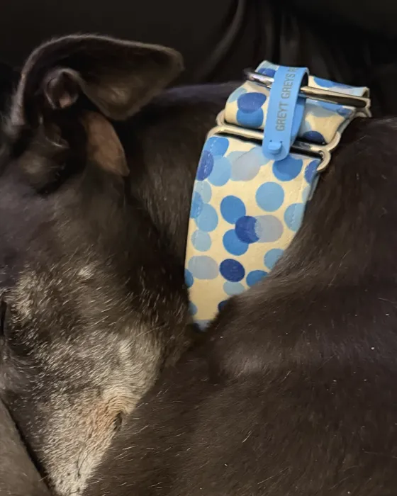

autumn / winter · the couch collection
The Wardrobe
cold-weather couture for a lady
who refuses to be chilly
signature accessory

The Polka-Dot Collar
worn with every single look. goes with lilac, goes with pink, goes with naps.
non-negotiable